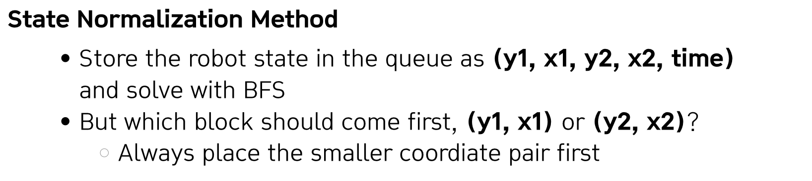
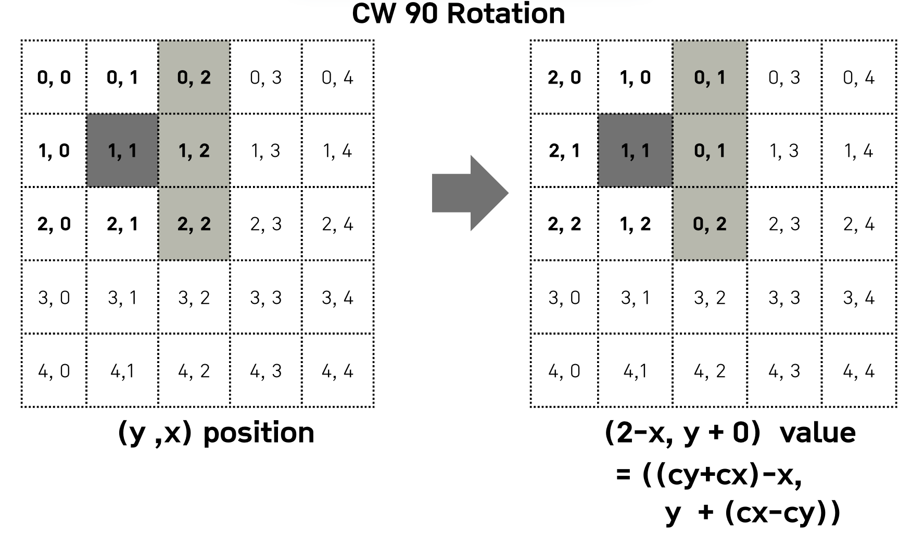

Lecture 2-2. DFS/BFS 실습#
예시 문제 링크
1번: 블록 이동하기#
갈 수 있는 방향 설정
아래처럼 길이 나있는 경우가 있을 수 있으므로, 직선으로 움직이는 경우 상하좌우, 회전도 robot의 pivot block 기준으로 가로로 위치한 경우에는 위아래 혹은 세로로 위치한 경우에는 상하로 회전할 수 있도록 해야한다.
물체가 2개의 셀 이상 차지하는 경우, 효율적 visited 정보 저장 및 normalization
물체가 차지하는 셀이 1개가 아닌 두개 이기때문에 아래 2가지를 고려해야한다.
Visited: 물체 (Robot)이 차지하는 셀이 한 개 초과 즉, 이경우에는 board에 표시하면 memory가 초과되기 때문에 visited={} set으로 방문 여부를 체크해주면 좋다.
Normalization: 상태 정규화(순서 고정)도 존재해야한다. 즉, (y,x,t,v)와 (t,v,y,x)는 같은 로봇 상태인데, visited가 다르게 취급해 중복 상태 폭증하며 시간도 초과된다. 매번 (a,b) 두 좌표를 정렬해서 (small,big)로 저장하거나, frozenset({pos1,pos2})로 관리해야 한다. 즉, 정규화를 통해 (P1, P2) 중 작은 것이 앞에 오도록하여 같은 위치에 있는 로봇의 상태 체크를 잘 할 수 있게 된다.

When we run BFS, each robot state is represented as the positions of its two blocks and the current time. But we need consistency: which block should be stored first? To avoid duplicates, we always order the two coordinates so that the smaller one comes first. This normalization guarantees that the same robot configuration is stored uniquely in the queue.
물체의 rotation 및 예상 결과 확인
If the robot is lying horizontally, we can rotate it around either the left block or the right block. Each rotation can go both upward and downward, converting the robot into a vertical orientation. So, in total, we get four possible rotations in this situation.

During rotation, we must check not only the pivot block but also the adjacent cells that the robot sweeps through.
If the pivot is the right block, the non-pivot’s upper and lower cells must be empty.
If the pivot is the left block, again the non-pivot’s upper and lower cells must also be empty. These checks prevent collisions during rotation.
After rotation, the final state is defined by the pivot block plus the new block either above or below it. For example, rotating upward results in the pivot plus the cell above it. Rotating downward results in the pivot plus the cell below it. This ensures that we represent the robot’s new vertical position consistently.

# [Left pivot rotation ↑]
# Pivot → (y1, x1)
# After move → {(y1, x1), (y1-1, x1)}
# Must check → (y2-1, x2)
# [Right pivot rotation ↑]
# Pivot → (y2, x2)
# After move → {(y2-1, x2), (y2, x2)}
# Must check → (y1-1, x1)
After rotation, the final state is defined by the pivot block plus the new block either above or below it. For example, rotating upward results in the pivot plus the cell above it. Rotating downward results in the pivot plus the cell below it. This ensures that we represent the robot’s new vertical position consistently.
When the robot is vertical, the situation is symmetric. The pivot can be either the top block or the bottom block. Each pivot allows a rotation to the left or to the right, changing the robot’s orientation from vertical to horizontal.

As in the horizontal case, rotation requires collision checks. If the pivot is the bottom block and we rotate left, the non-pivot’s left cell must be empty. If we rotate right, the non-pivot’s right cell must be empty. Similarly, when the pivot is the top block, we check the left and right cells of the non-pivot during rotation. These rules guarantee that rotations happen without intersecting obstacles.

After a vertical rotation, the final state is also described by the pivot plus one adjacent cell. Rotating left results in the pivot plus its left neighbor. Rotating right results in the pivot plus its right neighbor. This completes the transition from vertical to horizontal while preserving a consistent representation.
Complexity
By exploring the state space, we obtain a complexity of \(O(N^2)\). The grid size is \(N \times N\), and the robot can place one of its ends on any cell. This gives \(O(N^2)\) possibilities. Since the robot can exist in two orientations—horizontal and vertical—each cell has two possible states. Therefore, the total number of states is approximately \(O(2 \times N^2)\), which simplifies to \(O(N^2)\).
In addition, the number of possible actions from each state is constant: 8 moves in total (4 parallel moves in the four directions, plus 4 rotations — 2 pivots × 2 rotation directions). Thus, each state expands in \(O(1)\).
Consequently, the overall time complexity is \(O(N^2)\), and the space complexity is also \(O(N^2)\).
"""
제한사항
5 <= N <= 100
BFS -> O(NxN), 각 칸에 대해 2가지 방향, 각 상태에서 상수개 액션
# 장애물이 있으면 왼쪽/위쪽으로 돌아가야하므로 4방향 모두 탐색해야함.
# 회전도 양방향 회전 전부 고려해야함.
"""
from collections import deque
def solution(board):
n = len(board)
def in_range(y, x):
return 0 <= y < n and 0 <= x < n
def neighbors(p1, p2):
(y1, x1), (y2, x2) = p1, p2
cand = []
# 1) 4방향 평이동
dirs = [(-1,0),(1,0),(0,-1),(0,1)]
for dy, dx in dirs:
ny1, nx1 = y1 + dy, x1 + dx
ny2, nx2 = y2 + dy, x2 + dx
if in_range(ny1, nx1) and in_range(ny2, nx2) \
and board[ny1][nx1] == 0 and board[ny2][nx2] == 0:
cand.append(((ny1, nx1), (ny2, nx2)))
# 2) 회전 (가로 ↔ 세로)
if y1 == y2: # 가로일 때 → 세로로 회전
for d in [-1, 1]: # 위/아래
if in_range(y1 + d, x1) and in_range(y2 + d, x2) \
and board[y1 + d][x1] == 0 and board[y2 + d][x2] == 0:
# 왼쪽 블록 기준 회전
cand.append(((y1, x1), (y1 + d, x1)))
# 오른쪽 블록 기준 회전
cand.append(((y2, x2), (y2 + d, x2)))
elif x1 == x2: # 세로일 때 → 가로로 회전
for d in [-1, 1]: # 좌/우
if in_range(y1, x1 + d) and in_range(y2, x2 + d) \
and board[y1][x1 + d] == 0 and board[y2][x2 + d] == 0:
# 위쪽 블록 기준 회전
cand.append(((y1, x1), (y1, x1 + d)))
# 아래쪽 블록 기준 회전
cand.append(((y2, x2), (y2, x2 + d)))
# 상태 정규화 (작은 좌표가 앞으로)
norm = []
for a, b in cand:
if a <= b:
norm.append((a, b))
else:
norm.append((b, a))
return norm
# 3) BFS 시작
start = ((0, 0), (0, 1)) # 시작 상태
q = deque([(start, 0)])
visited = {start} # visited도 graph위에 체크하는 것이 아닌, Set으로 관리하여 메모리 효율적으로 관리
goal = (n - 1, n - 1)
while q:
(p1, p2), t = q.popleft()
if p1 == goal or p2 == goal:
return t
for nxt in neighbors(p1, p2):
if nxt not in visited:
visited.add(nxt)
q.append((nxt, t + 1))
return -1 # 도달 불가
if __name__ == '__main__':
board = [[0, 0, 0, 1, 1],
[0, 0, 0, 1, 0],
[0, 1, 0, 1, 1],
[1, 1, 0, 0, 1],
[0, 0, 0, 0, 0]] # Expected 7
print(solution(board))
board = [[0, 0],
[0, 0]] # Expected 1
print(solution(board))
board = [[0, 0, 0],
[0, 0, 0],
[0, 0, 0]] # Expected 3
print(solution(board))
2번: 고대 문명 유적 탐사#
리스트의 복사
리스트의 복사
1차원 리스트 같은 경우에는
[:]로 복사하면 된다.2차원 리스트는 [:]로 복사하면 얕은 복사라서, 내부 행 리스트를 공유하게 된다. 따라서
from copy import deepcopy를 사용하거나list comprehension를 사용하면 된다. 예를 들어 다음 코드와 같이 할 수 있다.
grid = [[1, 2], [3, 4]]
# 깊은 복사
copied = [row[:] for row in grid]
copied[0][0] = 99
print(grid) # [[1, 2], [3, 4]]
print(copied) # [[99, 2], [3, 4]]
Rotation around a center
이번 문제에서는 center가 변화하면서 rotation을 수행해야하기 때문에, 해당 center에서 3x3 rotation을 직접 종이에 적어본 후, 행열이 각각 어떻게 변하는지 예상 결과와 동일한지 하나하나 따져가며 구현해야한다. 말그대로 구현 문제!
즉, 5x5 행렬에서는 총 9개의 센터가 존재하고, 각 센터마다 90 -> 180 -> 270 회전 (27번) 중에서 가장 우선순위가 높은 것만 저장하면 된다. 또한, 각 센터에서 90 회전 다음에 또 90회전을 하면 180도이므로 CW 90도 회전 한 번을 구현해놓으면 코드가 간단해진다.
center가 (1,1)일때 CW 90도 회전 이후 결과

center가 (1,2)일때 CW 90도 회전 이후 결과

center가 (1,3)일때 CW 90도 회전 이후 결과
center가 (2,1)일때 CW 90도 회전 이후 결과
rotation.py degugging file
아래 파일을 따로 만들어서, 실제 로테이션이 잘 되는지 확인하였다. 문제를 풀 때 solve()함수는 다양한 함수들로 이루어져있어, 디버깅이 복잡하다. 따라서, 하나의 함수마다 degugging은 이런 식으로 별도로 output을 출력해서 확인하면 쉬워진다.
def in_circle(y, x, cy, cx):
return cy -1 <= y <= cy + 1 and cx -1 <= x <= cx + 1
def my_function(input) -> int:
N = len(input)
centers = [(1, 1), (1, 2), (1, 3), (2,1), (2,2), (2, 3), (3, 1), (3, 2), (3, 3)]
for cy, cx in centers:
local_graph = [row[:] for row in graph]
previous_local_graph = [row[:] for row in local_graph]
print(f"Original Graph")
for row in local_graph:
print(row)
for rotation_cnt in range(3):
for y in range(N):
for x in range(N):
if not (y==cy and x==cx) and in_circle(y, x, cy, cx):
add_num = cy + cx
x_minus_y = cx - cy
local_graph[y][x] = previous_local_graph[add_num-x][y + x_minus_y] # CW 90도 회전
else:
local_graph[y][x] = previous_local_graph[y][x]
print(f"Center {cy, cx}, CW {90*(rotation_cnt+1)} degree : ")
for row in local_graph:
print(row)
previous_local_graph = [row[:] for row in local_graph]
return local_graph
if __name__ == '__main__':
global graph
graph = [
[1, 2, 3, 10, 11],
[4, 5, 6, 12, 13],
[7, 8, 9, 14, 15],
[16, 17, 18, 19, 20],
[20, 21, 22, 23, 24],
]
result = my_function(graph)
Original Graph
[1, 2, 3, 10, 11]
[4, 5, 6, 12, 13]
[7, 8, 9, 14, 15]
[16, 17, 18, 19, 20]
[20, 21, 22, 23, 24]
Center (1, 1), CW 90 degree :
[7, 4, 1, 10, 11]
[8, 5, 2, 12, 13]
[9, 6, 3, 14, 15]
[16, 17, 18, 19, 20]
[20, 21, 22, 23, 24]
Center (1, 1), CW 180 degree :
[9, 8, 7, 10, 11]
[6, 5, 4, 12, 13]
[3, 2, 1, 14, 15]
[16, 17, 18, 19, 20]
[20, 21, 22, 23, 24]
Center (1, 1), CW 270 degree :
[3, 6, 9, 10, 11]
[2, 5, 8, 12, 13]
[1, 4, 7, 14, 15]
[16, 17, 18, 19, 20]
[20, 21, 22, 23, 24]
Original Graph
[1, 2, 3, 10, 11]
[4, 5, 6, 12, 13]
[7, 8, 9, 14, 15]
[16, 17, 18, 19, 20]
[20, 21, 22, 23, 24]
Center (1, 2), CW 90 degree :
[1, 8, 5, 2, 11]
[4, 9, 6, 3, 13]
[7, 14, 12, 10, 15]
[16, 17, 18, 19, 20]
[20, 21, 22, 23, 24]
Center (1, 2), CW 180 degree :
[1, 14, 9, 8, 11]
[4, 12, 6, 5, 13]
[7, 10, 3, 2, 15]
[16, 17, 18, 19, 20]
[20, 21, 22, 23, 24]
Center (1, 2), CW 270 degree :
[1, 10, 12, 14, 11]
[4, 3, 6, 9, 13]
[7, 2, 5, 8, 15]
[16, 17, 18, 19, 20]
[20, 21, 22, 23, 24]
Original Graph
[1, 2, 3, 10, 11]
[4, 5, 6, 12, 13]
[7, 8, 9, 14, 15]
[16, 17, 18, 19, 20]
[20, 21, 22, 23, 24]
Center (1, 3), CW 90 degree :
[1, 2, 9, 6, 3]
[4, 5, 14, 12, 10]
[7, 8, 15, 13, 11]
[16, 17, 18, 19, 20]
[20, 21, 22, 23, 24]
Center (1, 3), CW 180 degree :
[1, 2, 15, 14, 9]
[4, 5, 13, 12, 6]
[7, 8, 11, 10, 3]
[16, 17, 18, 19, 20]
[20, 21, 22, 23, 24]
Center (1, 3), CW 270 degree :
[1, 2, 11, 13, 15]
[4, 5, 10, 12, 14]
[7, 8, 3, 6, 9]
[16, 17, 18, 19, 20]
[20, 21, 22, 23, 24]
Original Graph
[1, 2, 3, 10, 11]
[4, 5, 6, 12, 13]
[7, 8, 9, 14, 15]
[16, 17, 18, 19, 20]
[20, 21, 22, 23, 24]
Center (2, 1), CW 90 degree :
[1, 2, 3, 10, 11]
[16, 7, 4, 12, 13]
[17, 8, 5, 14, 15]
[18, 9, 6, 19, 20]
[20, 21, 22, 23, 24]
Center (2, 1), CW 180 degree :
[1, 2, 3, 10, 11]
[18, 17, 16, 12, 13]
[9, 8, 7, 14, 15]
[6, 5, 4, 19, 20]
[20, 21, 22, 23, 24]
Center (2, 1), CW 270 degree :
[1, 2, 3, 10, 11]
[6, 9, 18, 12, 13]
[5, 8, 17, 14, 15]
[4, 7, 16, 19, 20]
[20, 21, 22, 23, 24]
Original Graph
[1, 2, 3, 10, 11]
[4, 5, 6, 12, 13]
[7, 8, 9, 14, 15]
[16, 17, 18, 19, 20]
[20, 21, 22, 23, 24]
Center (2, 2), CW 90 degree :
[1, 2, 3, 10, 11]
[4, 17, 8, 5, 13]
[7, 18, 9, 6, 15]
[16, 19, 14, 12, 20]
[20, 21, 22, 23, 24]
Center (2, 2), CW 180 degree :
[1, 2, 3, 10, 11]
[4, 19, 18, 17, 13]
[7, 14, 9, 8, 15]
[16, 12, 6, 5, 20]
[20, 21, 22, 23, 24]
Center (2, 2), CW 270 degree :
[1, 2, 3, 10, 11]
[4, 12, 14, 19, 13]
[7, 6, 9, 18, 15]
[16, 5, 8, 17, 20]
[20, 21, 22, 23, 24]
Original Graph
[1, 2, 3, 10, 11]
[4, 5, 6, 12, 13]
[7, 8, 9, 14, 15]
[16, 17, 18, 19, 20]
[20, 21, 22, 23, 24]
Center (2, 3), CW 90 degree :
[1, 2, 3, 10, 11]
[4, 5, 18, 9, 6]
[7, 8, 19, 14, 12]
[16, 17, 20, 15, 13]
[20, 21, 22, 23, 24]
Center (2, 3), CW 180 degree :
[1, 2, 3, 10, 11]
[4, 5, 20, 19, 18]
[7, 8, 15, 14, 9]
[16, 17, 13, 12, 6]
[20, 21, 22, 23, 24]
Center (2, 3), CW 270 degree :
[1, 2, 3, 10, 11]
[4, 5, 13, 15, 20]
[7, 8, 12, 14, 19]
[16, 17, 6, 9, 18]
[20, 21, 22, 23, 24]
Original Graph
[1, 2, 3, 10, 11]
[4, 5, 6, 12, 13]
[7, 8, 9, 14, 15]
[16, 17, 18, 19, 20]
[20, 21, 22, 23, 24]
Center (3, 1), CW 90 degree :
[1, 2, 3, 10, 11]
[4, 5, 6, 12, 13]
[20, 16, 7, 14, 15]
[21, 17, 8, 19, 20]
[22, 18, 9, 23, 24]
Center (3, 1), CW 180 degree :
[1, 2, 3, 10, 11]
[4, 5, 6, 12, 13]
[22, 21, 20, 14, 15]
[18, 17, 16, 19, 20]
[9, 8, 7, 23, 24]
Center (3, 1), CW 270 degree :
[1, 2, 3, 10, 11]
[4, 5, 6, 12, 13]
[9, 18, 22, 14, 15]
[8, 17, 21, 19, 20]
[7, 16, 20, 23, 24]
Original Graph
[1, 2, 3, 10, 11]
[4, 5, 6, 12, 13]
[7, 8, 9, 14, 15]
[16, 17, 18, 19, 20]
[20, 21, 22, 23, 24]
Center (3, 2), CW 90 degree :
[1, 2, 3, 10, 11]
[4, 5, 6, 12, 13]
[7, 21, 17, 8, 15]
[16, 22, 18, 9, 20]
[20, 23, 19, 14, 24]
Center (3, 2), CW 180 degree :
[1, 2, 3, 10, 11]
[4, 5, 6, 12, 13]
[7, 23, 22, 21, 15]
[16, 19, 18, 17, 20]
[20, 14, 9, 8, 24]
Center (3, 2), CW 270 degree :
[1, 2, 3, 10, 11]
[4, 5, 6, 12, 13]
[7, 14, 19, 23, 15]
[16, 9, 18, 22, 20]
[20, 8, 17, 21, 24]
Original Graph
[1, 2, 3, 10, 11]
[4, 5, 6, 12, 13]
[7, 8, 9, 14, 15]
[16, 17, 18, 19, 20]
[20, 21, 22, 23, 24]
Center (3, 3), CW 90 degree :
[1, 2, 3, 10, 11]
[4, 5, 6, 12, 13]
[7, 8, 22, 18, 9]
[16, 17, 23, 19, 14]
[20, 21, 24, 20, 15]
Center (3, 3), CW 180 degree :
[1, 2, 3, 10, 11]
[4, 5, 6, 12, 13]
[7, 8, 24, 23, 22]
[16, 17, 20, 19, 18]
[20, 21, 15, 14, 9]
Center (3, 3), CW 270 degree :
[1, 2, 3, 10, 11]
[4, 5, 6, 12, 13]
[7, 8, 15, 20, 24]
[16, 17, 14, 19, 23]
[20, 21, 9, 18, 22]
# 5x5중에서 3x3격자 선택 및 회전 CW: 90도, 180도, 270도
# 향상 회전 : 중심좌표를 기준으로 90도 회전
'''
### 탐사 진행: 회전 목표
1)유물 1차 회득 가치 최대화
2) 1)의 방법이 여러개이면, 회전한 각도 중 가장 작은 각도 선택
3) 2)의 방법도 여러가지이면 (회전 중심좌표가 다를 수 있음), 회전 중심 좌표의 열이 가장 작은 구간 선택
4) 열이 같다면 행이 가장 작은 구간 선택
### 유물 1차 획득
- 유물의 가치: 5x5행렬에서 모인 조각의 개수 -> "3개 이상"부터 획득 가능
- 유물이 사라짐.
- 새로들어오는 유물은 유적의 벽면에 써 있는 숫자대로 진행 (row up, column up순으로 채워짐)
- 사용된 숫자다음부터 다음에 사용할 수 있음
#### 유물 연쇄 획득
- 새로운 유물 조각이 생겨난 이후에도 유물이 있으면 조각을 획득하고 없앤후 다시 채움.
- 다만 더 이상 조각이 3개 이상 연결되지 않아 유물이 될 수 없으면 멈춤
#### 탐사 반복
- 탐사 진행 -> 유물 1차 획득 -> 유믈 연쇄 획득 과정까지 1턴이며 총 K번 턴을 돌림.
- 1번의 turn에서 K번 이전에 어떠한 방법을 사용해서라도 유물을 획득할 수 없다면, 모든 탐사는 그 즉시 종료됨.
이 경우 얻을 수 있는 유물이 존재하지 않으므로, 종료되는 턴에 아무 값도 출력하지 않음.
'''
from collections import deque
from typing import List
def solve():
# f = open('/Users/dayelee/Documents/GitHub/mybook/Input.txt', 'r')
K, M = map(int, input().split())
global graph, parts
graph = []
for n in range(5):
graph.append(list(map(int, input().split())))
# 유물조각은 들어온 순서부터 pop
parts = deque(list(map(int, input().split())))
for k in range(K):
total = 0
# Step 1:
# 3x3을 회전: 총 9개 위치를 중심으로 CW 90, 180, 270도 (9 * 3=27)개 중 선택, 유물은 조각 3개 이상 연결
# 유적위치 locs = list(), 유물의 가치 = len(locs),
locs, result_graph = explore()
if len(locs) == 0:
break # 유적의 가치가 없으면 K 턴 전에 stop
total += len(locs) # 유물의 가치 더하기
graph = result_graph[:] # 유적 graph update
# global graph에 유적 위치 Locs에 새로운 조각 update
update_graph(locs)
# global graph에 유물 연쇄 획득 과정
value= get_chained_parts()
total += value
# 공백을 사이에 두고 출력
print(total, end=' ')
def compare(fy, fx, ry, rx):
if fx != rx:
return fx < rx # 열 번호가 작은 순
elif fy != ry:
return fy > ry # 행 번호가 큰 순
return True
def sort_locs(locs: List):
'''
ascending order
'''
N = len(locs)
for f_pointer in range(N):
lowest_pointer = f_pointer
for r_pointer in range(f_pointer+1, N):
if not compare(locs[lowest_pointer][0], locs[lowest_pointer][1], locs[r_pointer][0], locs[r_pointer][1]):
# 저장
lowest_pointer = r_pointer
# swap
if lowest_pointer != f_pointer:
temp = locs[lowest_pointer]
locs[lowest_pointer] = locs[f_pointer]
locs[f_pointer] = temp
def update_graph(locs):
global graph, parts
sort_locs(locs) # call by reference
# 정렬 순서대로 update
for cy, cx in locs:
graph[cy][cx] = parts.popleft()
def in_circle(y, x, cy, cx):
return cy -1 <= y <= cy + 1 and cx -1 <= x <= cx + 1
def explore():
global graph
# 열이 가장 작고 -> 행이 가장 작은 순으로 배열
# centers = [(1, 1), (1, 2), (1, 3), (2,1), (2,2), (2, 3), (3, 1), (3, 2), (3, 3)]
centers = [(1, 1), (2, 1), (3, 1), (1, 2), (2, 2), (3, 2), (1, 3), (2, 3), (3, 3)]
max_value = 0
max_locs = []
min_rotation = 99999999
result_graph =[[0] * 5 for _ in range(5)]
for cy, cx in centers:
local_graph = [row[:] for row in graph]
previous_local_graph = [row[:] for row in local_graph]
# 90, 180, 270 CW rotation
for rotation_cnt in range(3):
# 회전 후의 새로운 graph생성
add_num = cy + cx
x_minus_y = cx - cy
for y in range(5):
for x in range(5):
# if (y!=cy and x!=cx) and in_circle(y, x, cy, cx):
if not (y==cy and x==cx) and in_circle(y, x, cy, cx):
local_graph[y][x] = previous_local_graph[add_num-x][y+x_minus_y] # CW 90도 회전
else:
local_graph[y][x] = previous_local_graph[y][x]
# 이전 rotaed graph update
previous_local_graph = [row[:] for row in local_graph]
# rotation 후 고정된 Graph에서 3개 이상 모여있는 유물의 위치 계산
cur_locs = calculate_values(previous_local_graph)
# locs, rotation_cnt비교
# 각도가 작은 것이 제일 먼저 priority : 각도가 같으면, 열 -> 행 순서대로 이미 적용되어있기 때문에, 가치가 더 클때만 바꾼다.
# 따라서 오직 이전것보다 큰 경우에만 update (같으면 앞의 것으로 함.)
if len(cur_locs) >= max_value: # Step 1: 유물 가치가 가장 높은 것을 최대화
if len(cur_locs) == max_value: # Step 2: Step 1이 여러개라면, 회전 각도가 가장 작은 것
if min_rotation > rotation_cnt:
# update
min_rotation = rotation_cnt
max_value = len(cur_locs)
max_locs = list(cur_locs)
result_graph = [row[:] for row in previous_local_graph]
else:
# update
min_rotation = rotation_cnt
max_value = len(cur_locs)
max_locs = list(cur_locs)
result_graph = [row[:] for row in previous_local_graph]
return max_locs,result_graph
def in_range(y, x):
return 0<=y<5 and 0<=x <5
def BFS(y, x, cur_graph):
q = deque([(y, x)])
visited = set()
visited.add((y, x))
DY = [-1, 1, 0, 0]; DX = [0, 0, 1, -1]
while q:
cur_y, cur_x = q.popleft()
for t in range(4):
ny = cur_y + DY[t]; nx = cur_x + DX[t]
# range안에 있고 & 원래 y, x 안에 있는 수와 옆의 수가 동일한지 & 방문하지는 않았는지
if in_range(ny, nx) and cur_graph[ny][nx] == cur_graph[y][x] and (not (ny, nx) in visited):
q.append((ny, nx))
visited.add((ny,nx))
# 3개 이상인지
if len(visited) >= 3:
return True, visited
else :
return False, None
def calculate_values(cur_graph):
'''
고정된 Graph에서 3개 이상 모여있는 유물의 위치 계산
'''
result = set()
for y in range(5):
for x in range(5):
is_more_three, locs = BFS(y, x, cur_graph)
if is_more_three:
# set을 extend하는 방법?
result = result.union(locs)
return result
def get_chained_parts():
global graph
values = 0
while True:
# 유적 위치 세기
locs = calculate_values(graph)
if len(locs) == 0:
break
values += len(locs)
# 유적 graph 업데이트하기
update_graph(list(locs))
return values
if __name__ == '__main__':
solve()